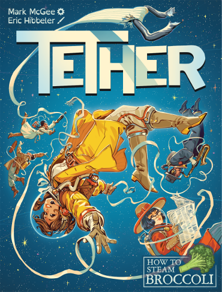

Our Games
-

Tether
A "mirror deck" card game for 2 players/teams, taking 15 minutes.
Astronauts love floating in space, but not all by themselves. Tether them together so they don’t drift through the galaxy alone.
Each card in this game has a 2-digit number between 01 and 98 in the top corner. When you rotate the card 180° the digits are swapped. For example, the card that shows 14 also shows 41 when looked at from the opposite direction. Connect astronauts together in consecutive numerical order, but since each player sees the cards from a different perspective, you have unique options available. Each time someone tethers astronauts together, it changes the possibilities for everyone.
Tether is currently in development and we are planning a Kickstarter early 2023! Visit our Kickstarter page to get notified when we launch, or sign up for our mailing list to get updates.